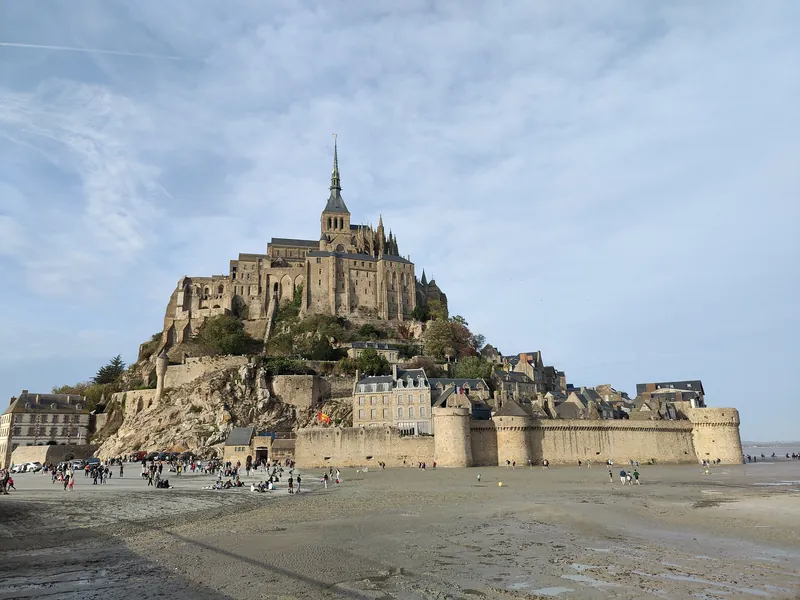

Per un bambino, Mont-Saint-Michel sembra un castello da libro illustrato: mura, torri, una via stretta che sale e un'abbazia in cima, circondata dal mare o dalla sabbia a seconda dell'ora. È una bella gita in famiglia, ma anche un luogo di scale, folla e maree. Ecco come organizzarla con i bambini: passeggini e piccoli, quanto resistono davvero, come trasformare la visita in un gioco e le poche regole di sicurezza che contano.
Con i bambini, il piano migliore è quello che si può mettere in pausa. L' audioguida autonoma TouringBee dell'isola va al tuo ritmo: ogni racconto lo avvii tu, quindi puoi fermarti per una merenda, un panorama o un bambino stanco e riprendere da dove eri rimasto.
In breve
- Il passeggino è scomodo sull'isola per i tanti gradini; un marsupio è molto più pratico.
- Il borgo e le mura sono gratuiti; l'ingresso all'abbazia è gratuito per i minori di 18 anni, ma la salita è lunga e piena di scale.
- Pianifica più corto che senza bambini e prevedi delle pause.
- Trasforma la passeggiata in un gioco: dai ai bambini cose da trovare lungo la strada.
- Non andare mai sulla sabbia della baia senza una guida autorizzata — con i bambini vale il doppio.
- Arriva di primo mattino: meno gente nella stretta via principale.
Mont-Saint-Michel è adatto ai bambini?
Per la maggior parte delle famiglie, sì. È compatto, sembra un vero castello — viene spesso citato tra le ispirazioni dei castelli da favola al cinema — e c'è molto da vedere senza l'atmosfera da «non toccare» di un museo: porte, mura, cannoni, una via tortuosa e, nel giorno giusto, la marea che circonda l'isola. Le difficoltà sono pratiche: molti gradini, una via principale affollata a metà giornata e pochi posti dove sedersi. Con un po' di organizzazione si gestisce tutto facilmente.
Passeggini e piccoli
L'isola non è adatta ai passeggini: la via principale è lastricata e ripida, e buona parte del percorso è fatta di scale. Per neonati e bimbi piccoli, un marsupio o uno zaino porta-bimbo è molto più pratico. Se hai il passeggino, usalo sulla terraferma, sul ponte e nel tratto piano vicino alla porta, e lascia la salita all'abbazia a un'altra volta.
Arrivare è facile: la navetta gratuita Le Passeur va dal parcheggio sulla terraferma a una fermata a circa 350 m dalla porta, oppure sono 2,5 km in piano a piedi sul ponte. Usa i bagni gratuiti sulla terraferma prima di attraversare — sull'isola sono pochi e di solito a pagamento. Per capire com'è fatta l'isola, vedi la nostra mappa e percorso a piedi.
Quanto resistono i bambini?
Siate realisti. La salita attraverso il borgo e la discesa sulle mura sono il cuore della visita e vanno bene per la maggior parte dei bambini che fanno le scale da soli. L'abbazia è un'altra lunga salita e una visita di circa 1,5-2 ore con molti altri gradini; con i bambini più piccoli può essere troppo. L'ingresso all'abbazia è gratuito per i minori di 18 anni (gli adulti hanno bisogno del biglietto, vedi la nostra guida ai biglietti dell'abbazia), quindi puoi decidere sul posto senza la sensazione di sprecare soldi. Un buon ritmo in famiglia: salita, pausa con vista, discesa sulle mura e pranzo fuori dalle ore più affollate.

Trasforma la visita in un gioco
I bambini resistono di più quando hanno una missione. Dai loro una lista di cose da trovare lungo la strada:
- i vecchi cannoni inglesi all'ingresso del borgo;
- la statua dorata dell'arcangelo Michele in cima alla guglia;
- la porta con il ponte levatoio e le torri sulle mura;
- la marea: oggi l'isola è circondata dall'acqua o dalla sabbia?
- la via o la scala più stretta che riescono a trovare;
- i gabbiani sulle mura — e quante barche o persone vedono nella baia.
Un piccolo premio alla fine — una crêpe o i famosi biscotti della Mère Poulard — aiuta anche. Per sapere dove mangiare, vedi la nostra guida dove mangiare a Mont-Saint-Michel.
Maree e sicurezza con i bambini
La baia è bellissima, ma non è una spiaggia. Ci sono sabbie mobili, e la marea torna veloce su un fondale piatto. Non lasciate mai che i bambini — né voi stessi — andiate sulla sabbia senza una guida autorizzata, nemmeno «solo fino al banco di sabbia più vicino». Se la famiglia vuole camminare nella baia, scegliete un'uscita guidata: le passeggiate brevi di circa 2 ore sono adatte ai bambini accompagnati da un adulto (vedi la nostra guida per attraversare la baia). Sulle mura, tenete per mano i piccoli vicino ai parapetti e alle scale. E se volete vedere salire una grande marea dalle mura, controllate gli orari nella nostra guida alle maree — è uno dei momenti che i bambini ricordano di più.
Quando andare con i bambini
Il momento più facile è il primo mattino: la via principale è tranquilla, c'è spazio sulle scale e niente code. A mezzogiorno, soprattutto d'estate e durante le vacanze scolastiche, la folla è massima — il momento più difficile con passeggino o bambini piccoli. Anche la sera è tranquilla, soprattutto se dormite nei dintorni. Su folla e stagioni, vedi quando visitare, e per dormire sul posto, la nostra guida su dove alloggiare.
L'audioguida con i bambini
Un'audioguida funziona bene per le famiglie perché niente segue un orario fisso. L'audioguida autonoma TouringBee ti porta dalle porte della città lungo la Grande Rue fino all'abbazia e sulle mura: 17 tappe, un percorso di circa 2 ore, una mappa GPS offline. Ogni racconto lo avvii tu, quindi puoi fare una pausa e riprendere più tardi; i più grandi possono seguire con le cuffie, e con i più piccoli i genitori possono ascoltare e raccontare le storie migliori con parole loro. I racconti sono scritti da storici locali e guide esperte. Un solo pagamento, un anno di accesso, 8 lingue. L'ingresso all'abbazia non è incluso. Di più nella nostra pagina dell'audioguida.
Esplora l'isola al ritmo della famiglia
17 tappe, un percorso GPS offline, racconti che avvii e metti in pausa tu — circa 2 ore.
Audioguida — da €9,99~2 h di percorso · offline · un solo pagamento · un anno di accesso
Consigli pratici per le famiglie
- Per neonati e bimbi piccoli, porta un marsupio invece del passeggino.
- Usa i bagni gratuiti sulla terraferma prima di attraversare.
- Porta acqua e merenda: la salita è ripida e a mezzogiorno le code per mangiare possono essere lunghe.
- Scarpe comode e giacca a vento — nella baia spesso tira vento.
- Concordate un punto d'incontro nel caso vi perdiate tra la folla.
- Decidete sull'abbazia sul posto: per i minori di 18 anni è gratuita, nessun obbligo di entrare.
Domande frequenti
Si può andare a Mont-Saint-Michel con il passeggino?
Sulla terraferma, sul ponte e nel tratto piano vicino alla porta sì, ma l'isola ha molti gradini e un lastricato ripido. Un marsupio è molto più pratico.
I bambini pagano l'ingresso all'abbazia?
No, l'ingresso all'abbazia è gratuito per i minori di 18 anni. Gli adulti hanno bisogno del biglietto. Il borgo e le mura sono gratuiti per tutti.
Quanto tempo prevedere con i bambini?
Circa 2 ore per il borgo e le mura al ritmo della famiglia, più il tempo per pause e pranzo. L'abbazia aggiunge circa 1,5-2 ore.
È sicuro per i bambini camminare nella baia?
Solo in un'uscita guidata con una guida autorizzata. A causa delle sabbie mobili e delle maree veloci, non andate mai sulla sabbia da soli.
Qual è il momento migliore per andare con i bambini?
Il primo mattino, quando la via principale è tranquilla. Mezzogiorno d'estate e durante le vacanze scolastiche è il momento più affollato.
Cosa pianificare poi
In sintesi
Mont-Saint-Michel è un castello che i bambini possono davvero percorrere. Lascia il passeggino in auto, arriva presto, pianifica più corto che da solo, dai ai bambini una missione e restate lontani dalla sabbia senza guida. Così le scale diventano parte dell'avventura e non un problema.
Alcuni link in questa pagina portano al nostro prodotto, l'audioguida TouringBee. Vedi la nostra informativa sull'affiliazione.